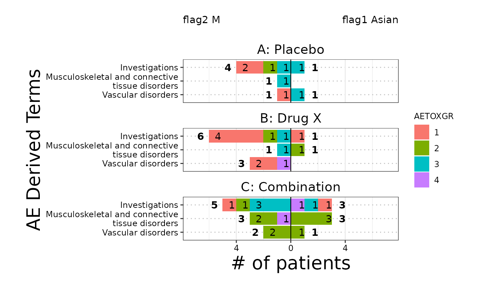

The butterfly plot is often used in Early Development (ED) and is an opposed barplot that shows instances of AEs or # of patients by category separated by a dichotomization variable. Each bar can be color coded according to a variable of choice and sorted according to either alphabetical order or the maximum count.
g_butterfly(
category,
right_flag,
left_flag,
id = NULL,
group_names = NULL,
block_count = c("# of patients", "# of AEs"),
block_color = NULL,
facet_rows = NULL,
x_label = block_count,
y_label = "AE Derived Terms",
legend_label = "AETOXGR",
sort_by = c("count", "alphabetical", "right", "left"),
show_legend = TRUE
)vector of y values
vector of logical of the same length as category.
used to filter category for the right side of the barplot.
to maintain backward compatibility, a vector of 1s and 0s would also work.
vector of logical of the same length as category.
used to filter category for the left side of the barplot.
to maintain backward compatibility, a vector of 1s and 0s would also work.
unique subject identifier variable.
string vector of length 2 with desired names of dichotomization variables required format : first name corresponds to the name of the right side second name corresponds to name of the left side default: will extract column names from group
string - what to count by (ex: # of AEs or # of patients)
vector - color coding of bar segments
vector defines what variable is used to split the plot into rows, default here is NULL
string of text for x axis label, default is block_count
string of text for y axis label, default is AE Derived Terms
character for legend label, default is AETOXGR
character string that defines the ordering of the class and term variables in the output table, options: "alphabetical", "count", "left", "right", default here is set to "count"
boolean of whether color coding legend is included, default here is FALSE
ggplot object
there is no equivalent STREAM output
library(dplyr)
ADSL <- rADSL %>%
select(USUBJID, STUDYID, SEX, ARM, RACE) %>%
dplyr::filter(SEX %in% c("F", "M"))
AAE <- rADAE %>% select(USUBJID, STUDYID, AEBODSYS, AETOXGR)
ANL <- left_join(AAE, ADSL, by = c("STUDYID", "USUBJID"))
ANL <- ANL %>%
dplyr::mutate(flag1 = ifelse(RACE == "ASIAN", 1, 0)) %>%
dplyr::mutate(flag2 = ifelse(SEX == "M", 1, 0))
ANL <- na.omit(ANL)
ANL <- ANL %>% dplyr::filter(AEBODSYS %in% c(
"Investigations", "Vascular disorders",
"Musculoskeletal and connective tissue disorders"
))
# Example 1, # of AEs
g_butterfly(
category = ANL$AEBODSYS,
right_flag = ANL$flag1,
left_flag = ANL$flag2,
group_names = c("flag1 Asian", "flag2 M"),
block_count = "# of AEs",
block_color = ANL$AETOXGR,
id = ANL$USUBJID,
x_label = "# of AEs",
y_label = "AE Body System",
legend_label = "AETOXGR",
sort_by = "count",
show_legend = TRUE
)
# Example 2, # of patients with facet
g_butterfly(
category = ANL$AEBODSYS,
right_flag = ANL$flag1,
left_flag = ANL$flag2,
group_names = c("flag1 Asian", "flag2 M"),
block_count = "# of patients",
block_color = ANL$AETOXGR,
facet_rows = ANL$ARM,
id = ANL$USUBJID,
x_label = "# of patients",
y_label = "AE Derived Terms",
legend_label = "AETOXGR",
sort_by = "count",
show_legend = TRUE
)
